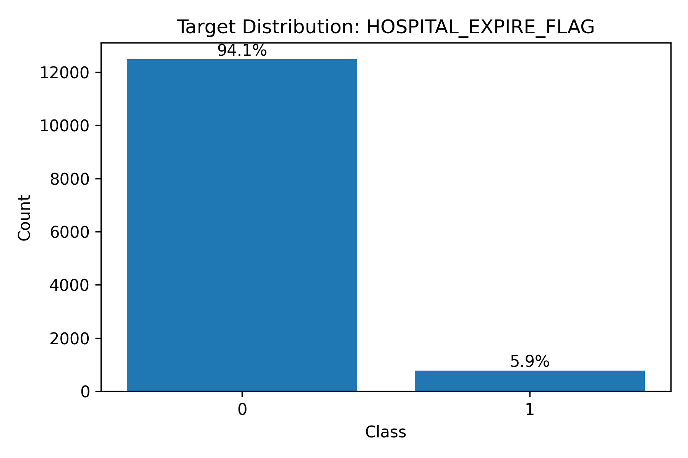
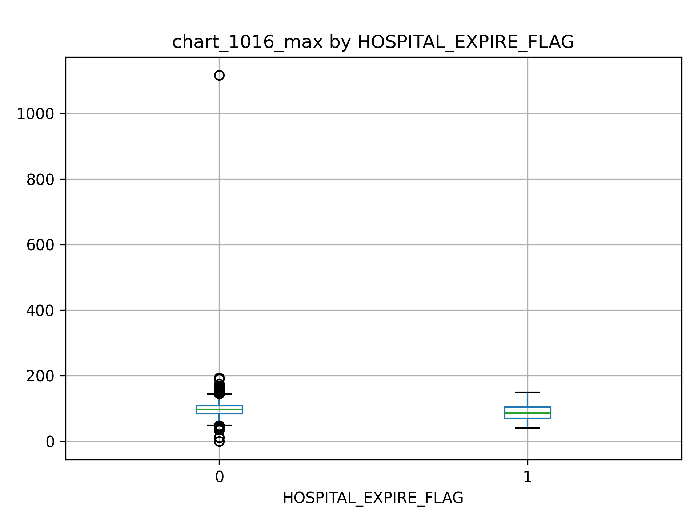
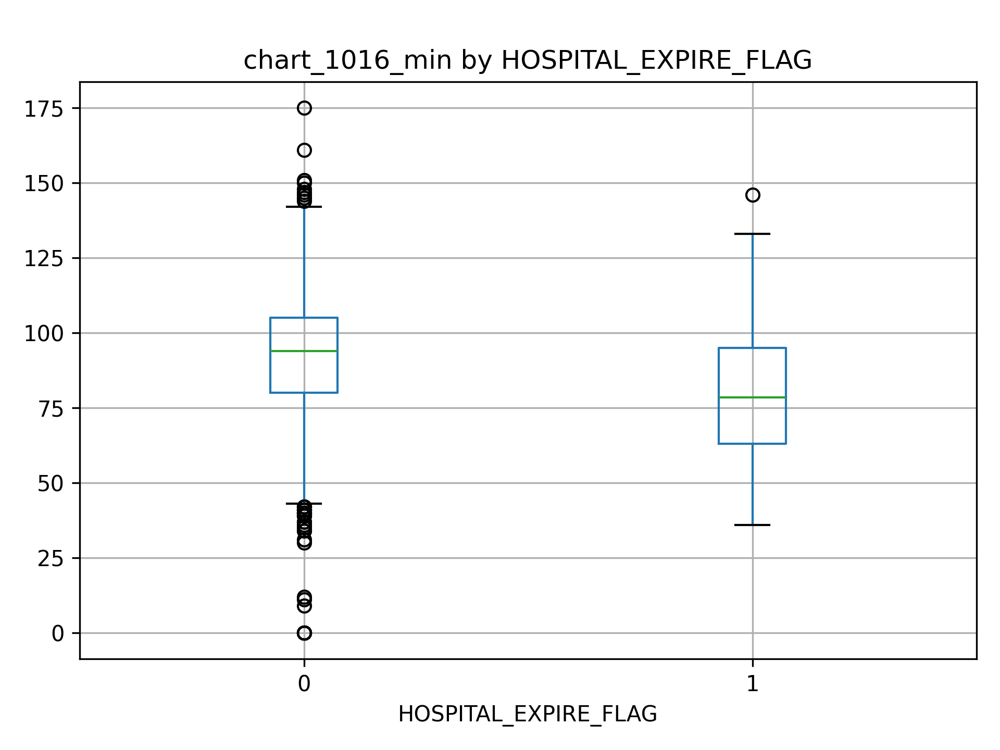
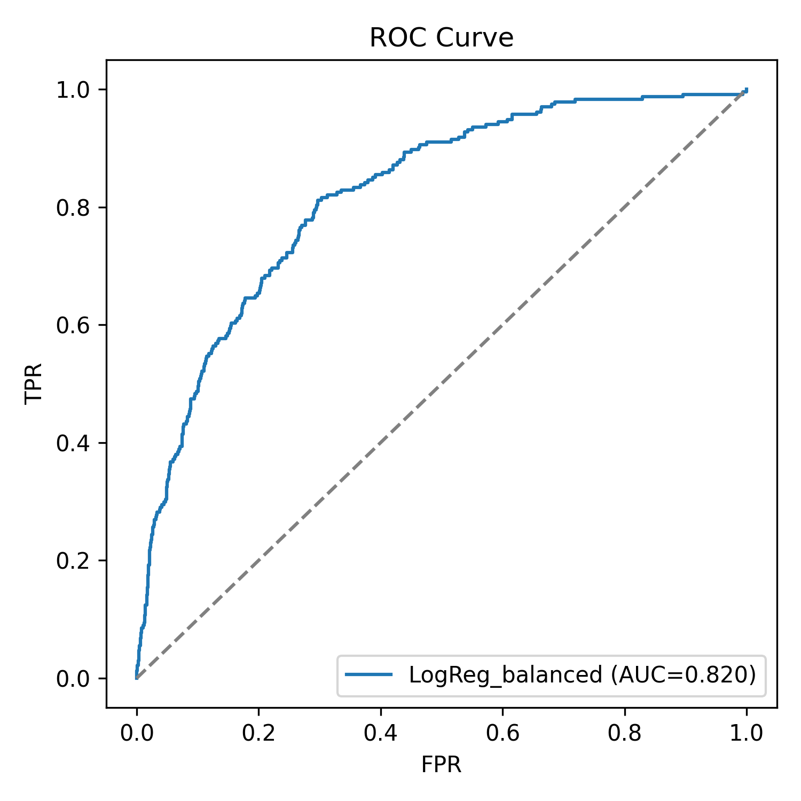
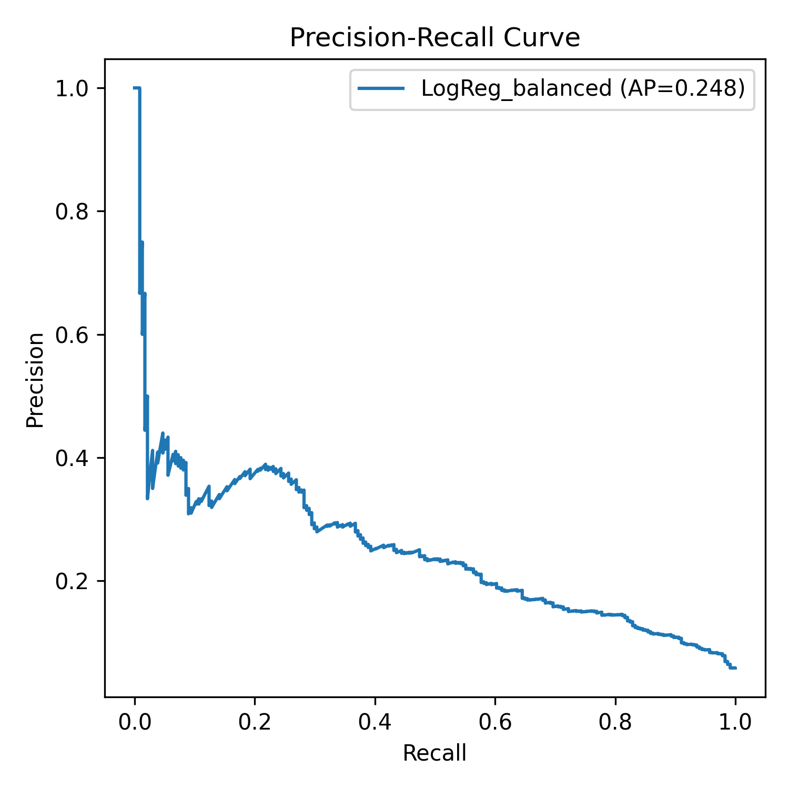
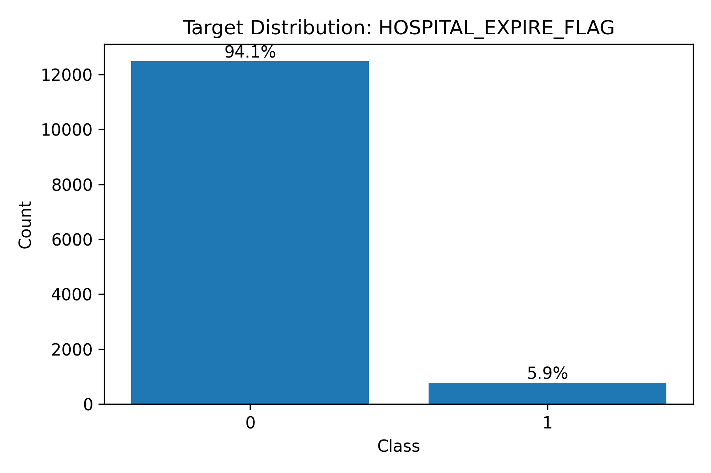
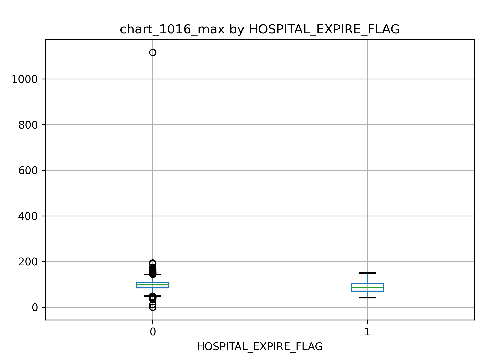
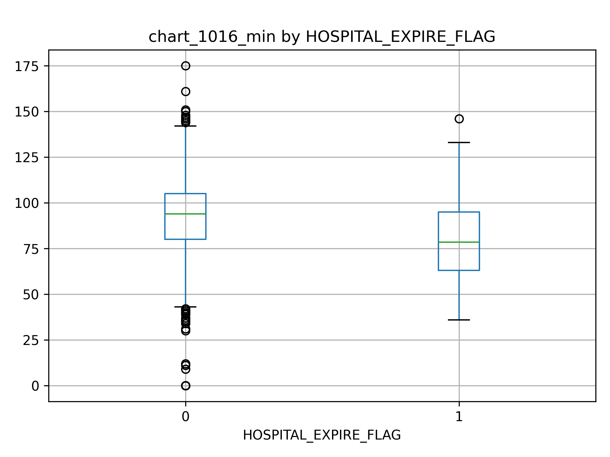
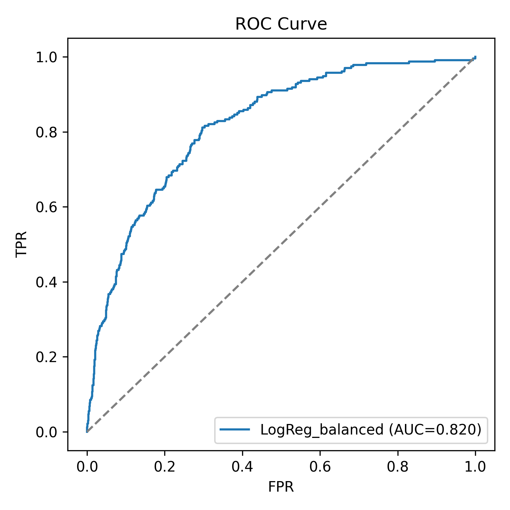
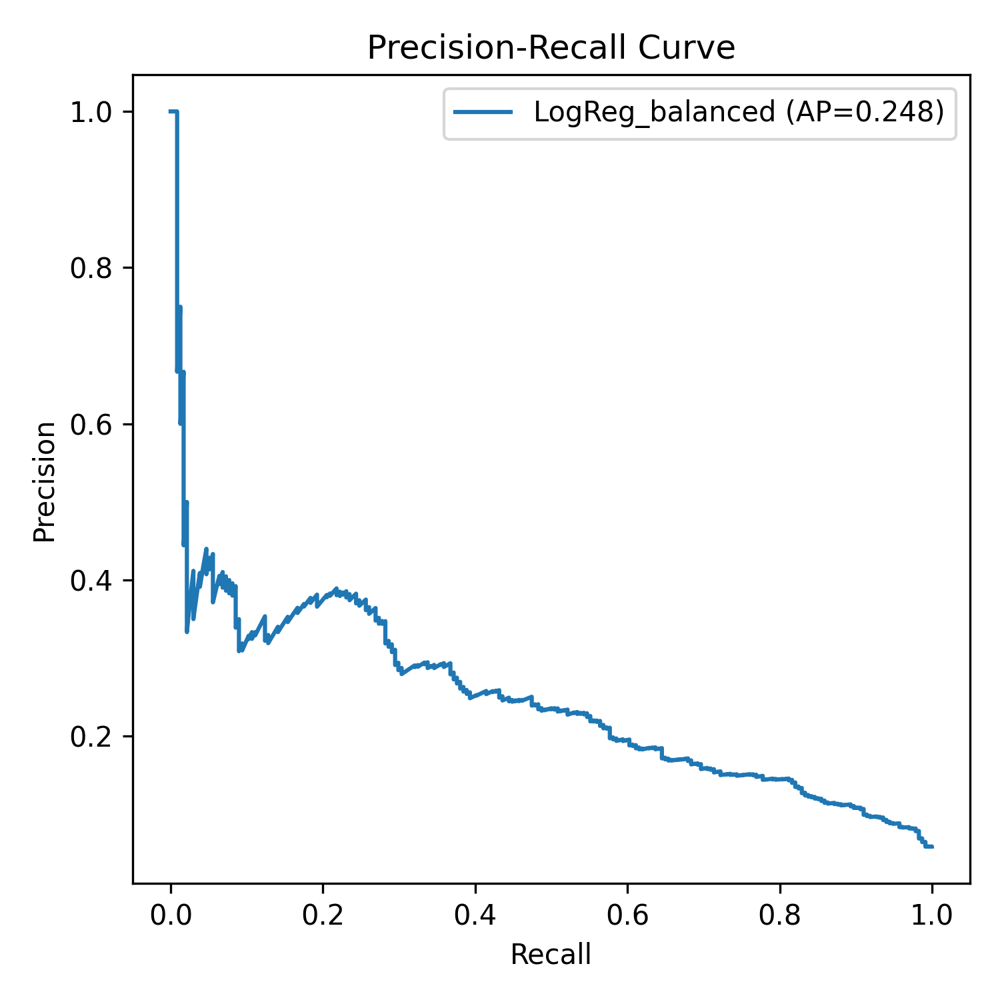

关键结果图
1. 目标变量分布
ICU 院内死亡率较低，任务具有明显类别不平衡特征。
2. 缺失值情况概览
展示缺失率最高的前若干特征，用于指导后续数据预处理。

3. 特征分布对比（箱线图）
对比不同结局患者的部分实验室指标分布差异（最大值/最小值）。
Max
Min
4. 模型评估结果（ROC / PR 曲线）
使用平衡 Logistic Regression 作为基线模型进行评估与可视化。
ROC
PR
姓名：李锦涛 ｜ 课程：健康数据科学的Python语言 ｜ 日期：2026年1月15日
我是李锦涛，北京大学医学技术研究院医学影像技术专业本科在读，同时修读北京大学国家发展研究院经济学双学位。 研究兴趣聚焦于医学影像与临床数据分析、影像组学与预测建模。
本项目使用 icu_first24hours.csv（ICU 患者入院前 24 小时相关特征）进行数据清洗、描述统计与可视化，
并建立基线预测模型预测 HOSPITAL_EXPIRE_FLAG（院内死亡标记）。
icu_first24hours.csv（课程提供示例数据）1. 目标变量分布
ICU 院内死亡率较低，任务具有明显类别不平衡特征。
2. 缺失值情况概览
展示缺失率最高的前若干特征，用于指导后续数据预处理。
3. 特征分布对比（箱线图）
对比不同结局患者的部分实验室指标分布差异（最大值/最小值）。
Max
Min
4. 模型评估结果（ROC / PR 曲线）
使用平衡 Logistic Regression 作为基线模型进行评估与可视化。
ROC
PR

代码在同一仓库中。运行 python main.py 可生成 figures/ 下的图像与 outputs/ 下的指标文件，
并用于报告与网页展示。